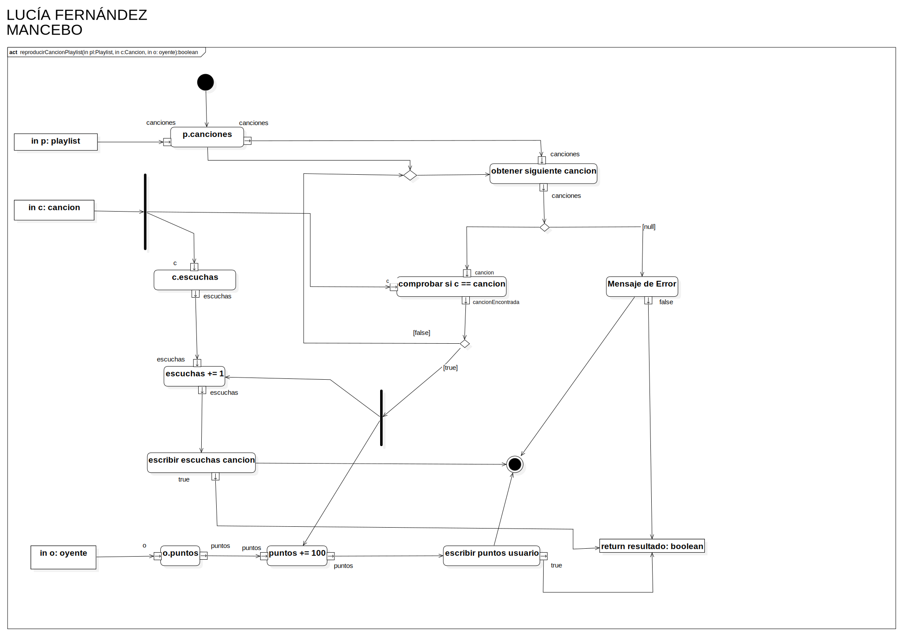

reproducirCancionPlaylist(in pl:Playlist, in c:Cancion, in o: oyente):boolean
UMLActivity
Youtify
::
Clases de diseño
::
Oyente - Lucia
::
Oyente
::
reproducirCancionPlaylist
::
reproducirCancionPlaylist(in pl:Playlist, in c:Cancion, in o: oyente):boolean
Description
none
Diagrams

reproducirCancionPlaylist
Nodes
in p: playlist
ObjectNode2
Action1
ObjectNode1
in c: cancion
in o: oyente
InitialNode1
p.canciones
obtener siguiente cancion
MergeNode1
DecisionNode1
comprobar si c == cancion
DecisionNode2
ForkNode1
Mensaje de Error
ForkNode2
c.escuchas
escuchas += 1
in o: oyente
o.puntos
puntos += 100
escribir escuchas cancion
escribir puntos usuario
Meensaje de Error
return resultado: boolean
ActivityFinalNode1
Edges
(in p: playlist→Action1)
(in p: playlist→canciones)
(in p: playlist→canciones)
(canciones→canciones)
(p.canciones→MergeNode1)
(p.canciones→MergeNode1)
(canciones→DecisionNode1)
(DecisionNode1→cancion)
(cancionEncontrada→DecisionNode2)
(DecisionNode2→MergeNode1)
(MergeNode1→obtener siguiente cancion)
(DecisionNode1→Mensaje de Error)
(DecisionNode2→ForkNode1)
(in c: cancion→ForkNode2)
(ForkNode2→c)
(ForkNode2→c)
(escuchas→escuchas)
(in o: oyente→o)
(in p: playlist→canciones)
(ForkNode1→escuchas += 1)
(ForkNode1→puntos += 100)
(puntos→puntos)
(escuchas→escribir escuchas cancion)
(puntos→escribir puntos usuario)
(escribir escuchas cancion→escribir escuchas cancion)
(escuchas→escribir escuchas cancion)
(false→Mensaje de Error)
(false→return resultado: boolean)
(true→return resultado: boolean)
(true→return resultado: boolean)
(Mensaje de Error→ActivityFinalNode1)
(escribir puntos usuario→ActivityFinalNode1)
(escribir escuchas cancion→ActivityFinalNode1)
(InitialNode1→p.canciones)
Properties
Name
Value
name
reproducirCancionPlaylist(in pl:Playlist, in c:Cancion, in o: oyente):boolean
stereotype
null
visibility
public
isReentrant
true
isReadOnly
false
isSingleExecution
false
Owned Elements
reproducirCancionPlaylist